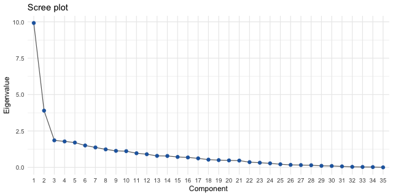
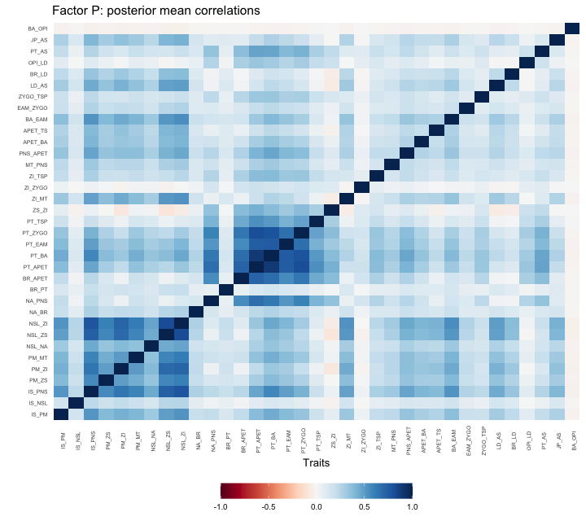
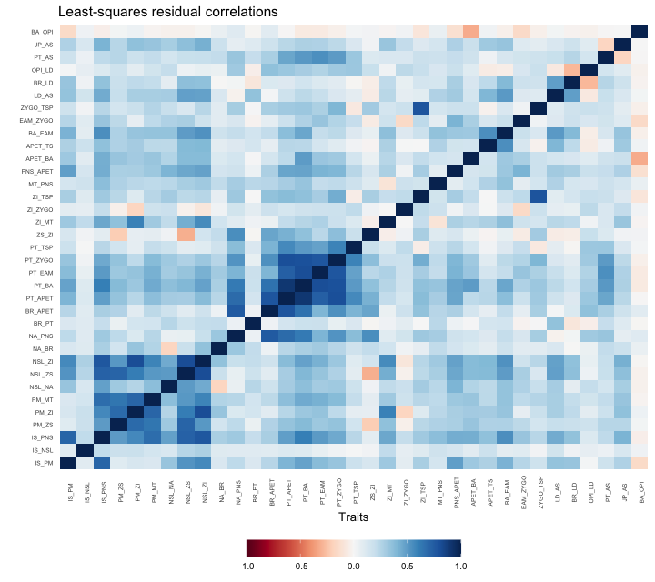
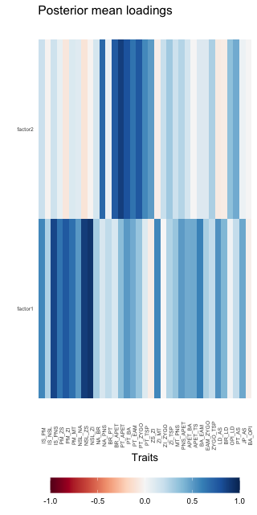

Sparse factor model for P
Source:vignettes/factor-phenotypic-covariance.Rmd
factor-phenotypic-covariance.RmdThe 35 log-transformed mouse traits are dominated by a single size
gradient: the first principal component takes about 40% of the variance
and the eigenvalues then fall away quickly. That is the low-rank
structure a factor model describes, so
lm_phen_cov(covariance_structure = "factor") estimates
P as a few sparse factors plus trait-specific variances
instead of a full 35 by 35 correlation matrix.
The factors stay on the observed log-trait scale on purpose. Rotating
the traits first (size plus shape scores, see size_shape())
spreads every loading over all 35 traits, which destroys the sparsity
the prior is there to find and moves the low-rank structure out of
P and into the rotation itself.
traits <- names(ratones_morpho)[12:46]
Y <- log(as.matrix(ratones_morpho[, traits]))
X <- stats::model.matrix(~ SEX + AGE + LIN, data = ratones_morpho)
dim(Y)
#> [1] 329 35
round(pc1_variance_share(Y), 3)
#> [1] 0.406How many factors?
The scree says where the low-rank structure is, and parallel analysis says how many dimensions clear the noise floor. That count is an upper bound, not a target.
set.seed(1)
suggested <- suggest_n_factors(Y, X)
c(dimensions = as.integer(suggested), variance_share = round(attr(suggested, "share"), 2))
#> dimensions variance_share
#> 7.00 0.63
round(scree_eigenvalues(Y, X)[1:8, ], 3)
#> component eigenvalue share cumulative
#> 1 1 9.919 0.283 0.283
#> 2 2 3.899 0.111 0.395
#> 3 3 1.858 0.053 0.448
#> 4 4 1.784 0.051 0.499
#> 5 5 1.704 0.049 0.548
#> 6 6 1.505 0.043 0.591
#> 7 7 1.370 0.039 0.630
#> 8 8 1.239 0.035 0.665
plot(scree_eigenvalues(Y, X))
plot of chunk scree
Parallel analysis keeps 7 dimensions, but the first two stand clear
of a flat tail and the last ones only just clear their cutoffs. A
three-factor fit gives bimodal communalities (Rhat 1.5
across four chains), which is the model saying that direction is not in
the data, so two factors it is. The column decay is stronger than the
0.8 default because the two columns come out at similar sizes: at 0.8
their labels swap between chains, and at 0.5 they are ordered and
converge.
Fit
fit <- lm_phen_cov(
Y, X,
covariance_structure = "factor", n_factors = 2,
hs_global_scale = 2, hs_slab_scale = 2,
column_decay = 0.5,
iter = 2000, warmup = 1000, chains = 4, cores = 4,
refresh = 0, show_messages = FALSE, seed = 1
)
fit$diagnostic_summary()
#> $num_divergent
#> [1] 0 0 0 0
#>
#> $num_max_treedepth
#> [1] 0 0 0 0
#>
#> $ebfmi
#> [1] 0.8985592 0.9778778 0.9336933 0.8926281Against the least-squares residual covariance
P is on the log-trait scale, so it is directly
comparable with the covariance of the least-squares residuals. A factor
model is a rank-k approximation, so its error has to be
read against the best a rank-k structure can do, not
against zero. The errors are on the correlation scale, because an
absolute error on variances of about 0.001 says nothing.
P_hat <- draws_mean(fit, "P")
P_ols <- stats::cov(stats::lm.fit(X, Y)$residuals)
corr_hat <- stats::cov2cor(P_hat)
corr_ols <- stats::cov2cor(P_ols)
relative_error <- function(estimate, target)
sqrt(mean((estimate - target)^2) / mean(target^2))
eigen_ols <- eigen(corr_ols, symmetric = TRUE)
best_rank <- eigen_ols$vectors[, 1:2] %*% diag(eigen_ols$values[1:2]) %*%
t(eigen_ols$vectors[, 1:2])
diag(best_rank) <- 1
c(factor_model = relative_error(corr_hat, corr_ols),
best_rank_2 = relative_error(best_rank, corr_ols))
#> factor_model best_rank_2
#> 0.2528030 0.2522873
round(rbind(factor = diag(P_hat)[1:5], ols = diag(P_ols)[1:5]), 4)
#> IS_PM IS_NSL IS_PNS PM_ZS PM_ZI
#> factor 0.0018 0.0017 7e-04 9e-04 1e-03
#> ols 0.0017 0.0016 7e-04 9e-04 9e-04The horseshoe shrinks, so the fitted correlations should sit slightly closer to zero than the least-squares ones. A large gap the other way would mean the prior is inflating the common structure instead of smoothing it.
Loadings, communality and uniqueness
A factor’s sign is unidentified: flipping one loading column leaves
P unchanged, so a chain can visit both orientations, and
averaging them would cancel the factor out of the posterior mean.
draws_mean() aligns every draw to the trait with the
largest mean absolute loading first, so nothing needs to be done
here.
Communality is the share of a trait’s variance taken by the common
factors, and uniqueness is its complement. Both are invariant to
rotation; loadings and factor magnitudes are not, so read those only
after P and communality have converged.
lambda <- draws_mean(fit, "loadings")
round(lambda[1:5, ], 3)
#> factor1 factor2
#> IS_PM 0.572 0.184
#> IS_NSL 0.269 -0.016
#> IS_PNS 0.846 0.167
#> PM_ZS 0.646 0.058
#> PM_ZI 0.766 -0.082
fit$summary("factor_magnitude")[, c("variable", "mean", "sd", "rhat", "ess_bulk")]
#> # A tibble: 2 × 5
#> variable mean sd rhat ess_bulk
#> <chr> <dbl> <dbl> <dbl> <dbl>
#> 1 factor_magnitude[1] 7.80 0.684 1.00 422.
#> 2 factor_magnitude[2] 4.99 0.566 1.00 359.
fit$summary("communality")[1:5, c("variable", "mean", "sd", "rhat", "ess_bulk")]
#> # A tibble: 5 × 5
#> variable mean sd rhat ess_bulk
#> <chr> <dbl> <dbl> <dbl> <dbl>
#> 1 communality[1] 0.369 0.0443 1.000 2774.
#> 2 communality[2] 0.0780 0.0303 1.00 3506.
#> 3 communality[3] 0.753 0.0270 1.00 2445.
#> 4 communality[4] 0.427 0.0460 1.000 2973.
#> 5 communality[5] 0.600 0.0409 1.00 2786.
sum(draws_mean(fit, "communality")) # total common variance
#> [1] 12.79445
plot_corr(corr_hat, "Factor P: posterior mean correlations")
plot of chunk heatmaps
plot_corr(corr_ols, "Least-squares residual correlations")
plot of chunk heatmaps
plot_corr(lambda, "Posterior mean loadings")
plot of chunk loading-heatmap